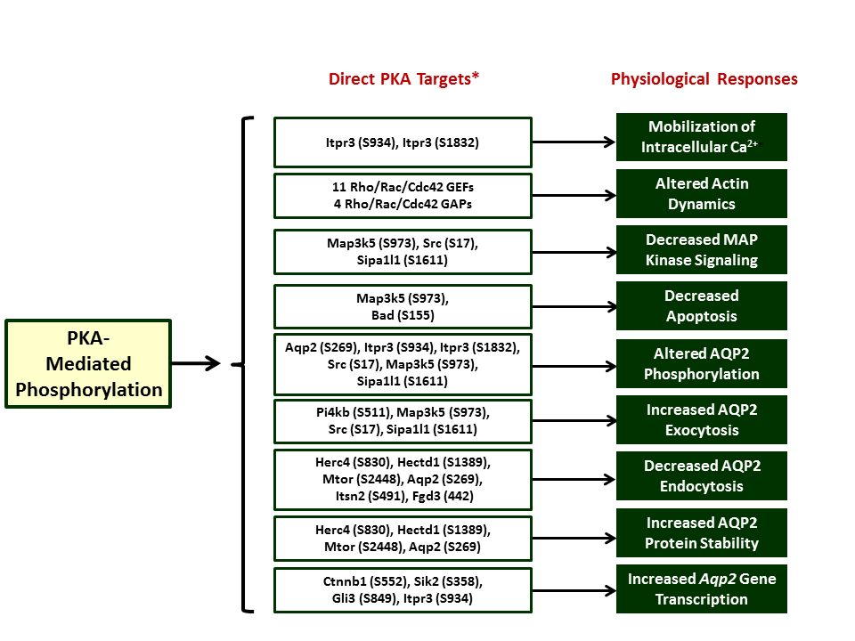

Epithelial Systems Biology Laboratory, NHLBI
Epithelial Systems Biology Laboratory, NHLBI
Entry Page to PKA Network
Source: Isobe K, Jung HJ, Yang CR, Claxton J, Sandoval P, Burg MB, Raghuram V, Knepper MA. Systems-level identification of PKA-dependent signaling in epithelial cells. Proc Natl Acad Sci U S A. 2017; 114: E8875-E8884. PMID: 28973931
(Network is divided up into multiple subnetworks based on physiological responses regulated. Click on individual Physiological Responses to reveal subnetworks with documentation.)

*Basophilic phosphorylation sites with decreased phospho-occupancy in PKA double knockout cells (both PKA catalytic subunit genes deleted in mouse mpkCCD cells by CRISPR-Cas9)
Click here to return to index page.